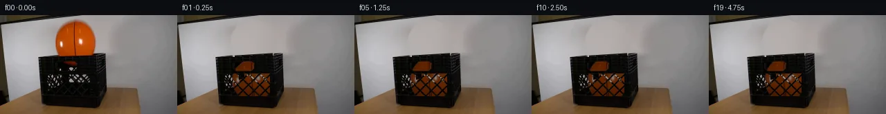

![首帧]()

Round 00
2026-11-04T20:27:40.741018+00:00像素候选变化代码 +178/−0inspection 更新
pixels e4a3d59f66bc491c · code 2ca52a77c9650318
查看本轮 generate.py 真实 diff
--- previous/generate.py
+++ current/generate.py
@@ -0,0 +1,178 @@
+"""Deterministic local photographic compositing with analytic drop/impact dynamics."""
+from pathlib import Path
+import json
+import numpy as np
+from PIL import Image, ImageDraw
+from scipy.ndimage import map_coordinates, gaussian_filter
+from artifact_io import save
+
+ROOT = Path(__file__).resolve().parent
+src = np.asarray(Image.open(ROOT/'first_frame.png').convert('RGB'), dtype=np.uint8)
+H, W = src.shape[:2]
+y, x = np.mgrid[:H, :W].astype(float)
+source = src.astype(float)
+cx, cy, rx, ry = 108.8, 41.8, 28.9, 33.4
+
+# Fit only the nearby gray wall; exclude the ball and its soft edge shadow.
+u, v = (x-110)/60, (y-35)/45
+features = np.stack([np.ones_like(x),u,v,u*u,u*v,v*v], axis=-1)
+wall_area = (x>60)&(x<174)&(y>5)&(y<59-0.060*(x-80))
+excluded = ((x-cx)/35.5)**2 + ((y-cy)/40)**2 < 1
+samples = wall_area & ~excluded
+fit = np.linalg.lstsq(features[samples], source[samples], rcond=None)[0]
+wall = np.clip(features@fit, 0,255)
+base = source.copy()
+# A soft expanded ellipse includes edge blur and the near-wall ball shadow.
+rho = np.sqrt(((x-cx)/32.6)**2 + ((y-cy)/36.8)**2)
+remove = np.clip((1.045-rho)/0.075,0,1)
+front_top = 61.4 - 0.035*(x-56)
+remove *= y < front_top-0.4
+base = base*(1-remove[...,None]) + wall*remove[...,None]
+
+# Restore the narrow top opening/rim that was hidden in the starting photograph.
+rear_rim_y = 60.1 - 0.062*(x-65)
+covered_x = (x>=83)&(x<=137)
+opening = covered_x & (y>=rear_rim_y+0.6) & (y<front_top)
+base[opening] = (13,14,12)
+rim_alpha = np.clip(1.3-np.abs(y-rear_rim_y),0,1)*covered_x
+rim_color = np.stack([19+1.7*np.sin(x*.48),20+1.7*np.sin(x*.48),18+1.7*np.sin(x*.48)],axis=-1)
+base = base*(1-rim_alpha[...,None]) + rim_color*rim_alpha[...,None]
+
+# Ball texture. Retain photographed upper surface; extend only hidden lower surface.
+tY,tX = np.mgrid[:82,:65].astype(float)
+tcx,tcy = 32,36.0
+tex_x = cx + tX-tcx
+tex_y = cy + tY-tcy
+photographed = np.stack([map_coordinates(source[:,:,k],[np.minimum(tex_y,56.0),tex_x],order=1,mode='nearest') for k in range(3)],axis=-1)
+nx, ny = (tX-tcx)/rx, (tY-tcy)/ry
+normal_z = np.sqrt(np.maximum(0,1-nx*nx-ny*ny))
+# Color extension derives from the lower source stripe, with extra lower hemisphere shading.
+stripe = np.stack([map_coordinates(source[:,:,k],[np.full_like(tex_x,54),tex_x],order=1,mode='nearest') for k in range(3)],axis=-1)
+# Near the extremities use the ball's interior color rather than background outside its contour.
+clamp_x = cx + np.clip(tX-tcx,-24,24)
+stripe = np.stack([map_coordinates(source[:,:,k],[np.full_like(tex_x,53),clamp_x],order=1,mode='nearest') for k in range(3)],axis=-1)
+extension = stripe*(0.89+0.11*normal_z[...,None])
+extension *= (1-0.10*np.clip(ny,0,1))[...,None]
+seam_x = 0.035 + 0.055*np.clip(ny,0,1)**2
+seam = np.exp(-((nx-seam_x)/0.027)**2)
+extension *= (1-.64*seam[...,None])
+blend = np.clip((tex_y-54)/4,0,1)
+texture = photographed*(1-blend[...,None]) + extension*blend[...,None]
+
+# Crate's front occlusion: handhold and geometric diamond apertures.
+# The broad panel, rim, uprights and grid rods retain source colors.
+# A subpixel mask reveals the ball only through the front holes.
+hand_im = Image.new('L',(W*4,H*4),0)
+d = ImageDraw.Draw(hand_im)
+d.polygon([(int(a*4),int(b*4)) for a,b in [(84,69),(101,67.3),(108,68.5),(111.2,71.2),(110.7,77.8),(106.5,81),(85,81.3),(82.2,77.9),(82,72.3)]], fill=255)
+hand = np.asarray(hand_im.resize((W,H),Image.Resampling.LANCZOS),dtype=float)/255
+# Replace the old orange ball pixels in the handhold with a dark unobstructed interior.
+old_orange = hand * np.clip((source[:,:,0]-source[:,:,1]-15)/35,0,1)
+base = base*(1-old_orange[...,None]) + np.array([10,11,10])*old_orange[...,None]
+
+window = (x>=68)&(x<=133)&(y>=85.2-0.018*(x-68))&(y<=116.7+0.020*(x-68))
+plus = np.min(np.abs((x+y)[...,None]-np.array([187.5,203.7,219.9,236.1,252.3])),axis=-1)/np.sqrt(2)
+minus = np.min(np.abs((y-x)[...,None]-np.array([31.0,14.8,-1.4,-17.6,-33.8,-50.0])),axis=-1)/np.sqrt(2)
+rod_dist = np.minimum(plus,minus)
+grid_open = np.clip((rod_dist-.70)/.65,0,1)*window
+# Central front reinforcement at the upper left of the large diamond panel.
+reinforce = (x>88)&(x<97)&(y<94)&(y>83)&(y < 94-.48*(x-88))
+grid_open[reinforce]=0
+front_open = np.maximum(hand,grid_open)
+visibility = np.where(y < front_top-0.5,1.0,front_open)
+visibility *= ((x>60)&(x<145))
+
+# Integrate gravity and diminishing bounces at 0.5 ms, with a fixed crate floor.
+dt=.0005
+g=1830.0
… diff truncated; 91 more lines …